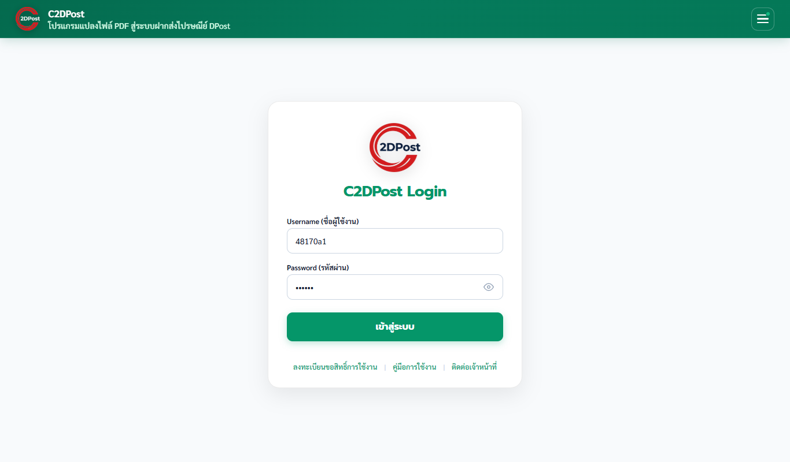
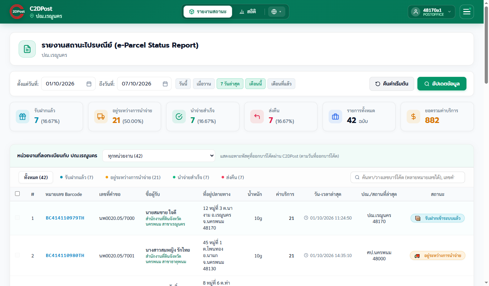
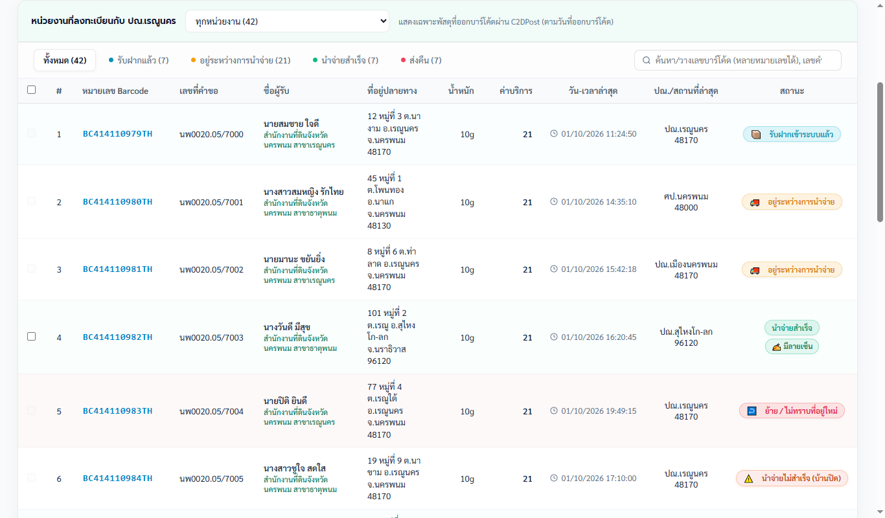
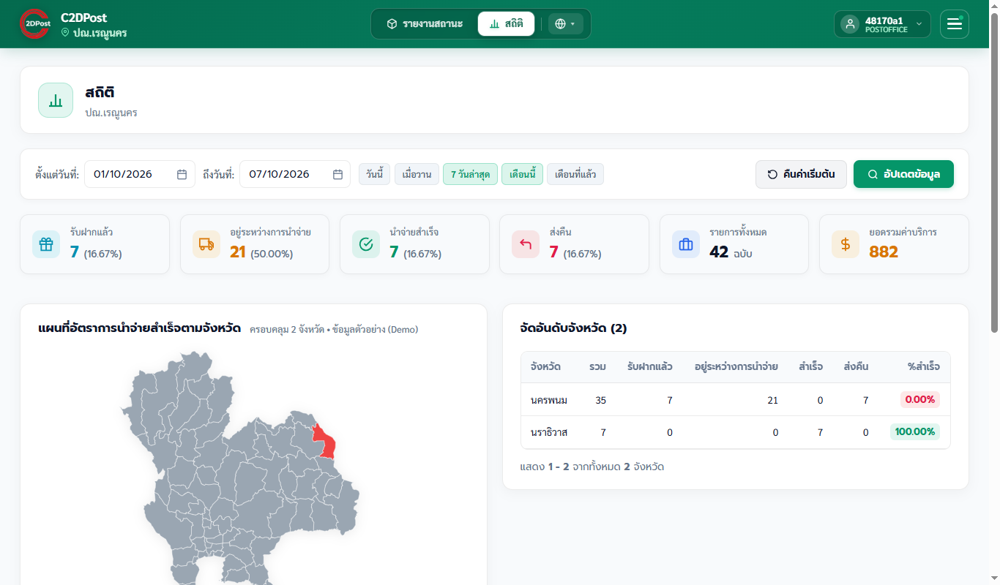

1. บัญชีผู้ใช้
ทุกที่ทำการไปรษณีย์มีบัญชีให้แล้ว ไม่ต้องลงทะเบียน
| ช่อง | รูปแบบ | ตัวอย่าง (ปณ. 48160) |
|---|---|---|
| ชื่อผู้ใช้ | รหัสไปรษณีย์ + a1 | 48160a1 |
| รหัสผ่าน | d + รหัสไปรษณีย์ | d48160 |

ใช้งานได้ทั้งบนคอมพิวเตอร์ (Google Chrome) และโทรศัพท์ ไม่ต้องติดตั้ง Extension หลังเข้าสู่ระบบจะเข้าหน้ารายงานสถานะทันที
2. นโยบายการใช้ข้อมูลส่วนบุคคล (PDPA)
- ใช้เพื่องานไปรษณีย์เท่านั้น เช่น ติดตามการนำจ่าย ตอบคำถามหน่วยงาน ตรวจสอบพัสดุตีกลับ
- ห้ามเปิดเผยหรือส่งต่อ ข้อมูล ไฟล์ Excel/PDF หรือภาพหน้าจอ ให้บุคคลภายนอก
- ห้ามแจ้งรหัสผ่านแก่ผู้อื่น ที่ไม่ใช่เจ้าหน้าที่ของที่ทำการ
- ลบไฟล์ที่ดาวน์โหลด เมื่อหมดความจำเป็น และไม่เก็บไว้ในเครื่องสาธารณะ
- ออกจากระบบ ทุกครั้งเมื่อใช้เครื่องร่วมกับผู้อื่น
3. ข้อมูลที่มองเห็น
- เฉพาะพัสดุที่ออกบาร์โค้ดผ่าน C2DPost ของ หน่วยงานที่ลงทะเบียนเลือกที่ทำการของท่าน เป็นที่ทำการรับผิดชอบ
- นับตาม วันที่ออกบาร์โค้ด ในช่วงวันที่ที่เลือก
- เห็นข้อมูลเหมือนหน่วยงาน ได้แก่ ชื่อ ที่อยู่ผู้รับ สถานะ ลายเซ็น และใบตอบรับ e-AR
- ค้นบาร์โค้ดของหน่วยงานอื่นที่ไม่ได้ลงทะเบียนกับที่ทำการของท่านไม่ได้
4. รายงานสถานะพัสดุ

- เลือกช่วงวันที่ แล้วกด ดึงข้อมูล
- ใช้ตัวเลือก หน่วยงาน เพื่อดูเฉพาะหน่วยงานใดหน่วยงานหนึ่ง ในตารางจะมีชื่อหน่วยงานกำกับใต้ผู้ฝากทุกแถว
- คลิกการ์ดสรุปเพื่อกรองตามสถานะ คลิกเลขบาร์โค้ดเพื่อดูประวัติ
- ดาวน์โหลด Excel, PDF หรือ e-AR ได้จากปุ่มด้านล่างตาราง

ความหมายของป้ายลายเซ็น: ✍️ มีลายเซ็น, ✕ ไม่พบลายเซ็น และ ⚠ ระบบ e-AR มีปัญหา (ระบบ e-AR ของไปรษณีย์ขัดข้องชั่วคราว)
5. สถิติ

แสดงแผนที่ อันดับพื้นที่ และสาเหตุการส่งคืน/นำจ่ายไม่สำเร็จ คลิกสาเหตุเพื่อดูรายการและดาวน์โหลด Excel
6. คำถามที่พบบ่อย
ไม่พบข้อมูลของหน่วยงานที่ฝากส่งที่ ปณ. ของเรา
ระบบแสดงเฉพาะหน่วยงานที่ลงทะเบียน C2DPost และเลือกที่ทำการของท่านเป็นที่ทำการรับผิดชอบ ถ้าหน่วยงานเลือกที่ทำการผิด ให้แจ้งผู้ดูแลระบบแก้ไข
ค้นบาร์โค้ดแล้วขึ้นว่าไม่มีสิทธิ์
บาร์โค้ดนั้นไม่ได้เป็นของหน่วยงานในความรับผิดชอบของท่าน
เปลี่ยนรหัสผ่านได้ไหม
ไม่ได้ ใช้รหัสตามรูปแบบตลอด จึงขอให้ปฏิบัติตามนโยบายในหัวข้อที่ 2 อย่างเคร่งครัด
ขึ้น "ระบบ e-AR มีปัญหา"
ระบบ e-AR ของไปรษณีย์ขัดข้องชั่วคราว รอสักครู่แล้วลองใหม่